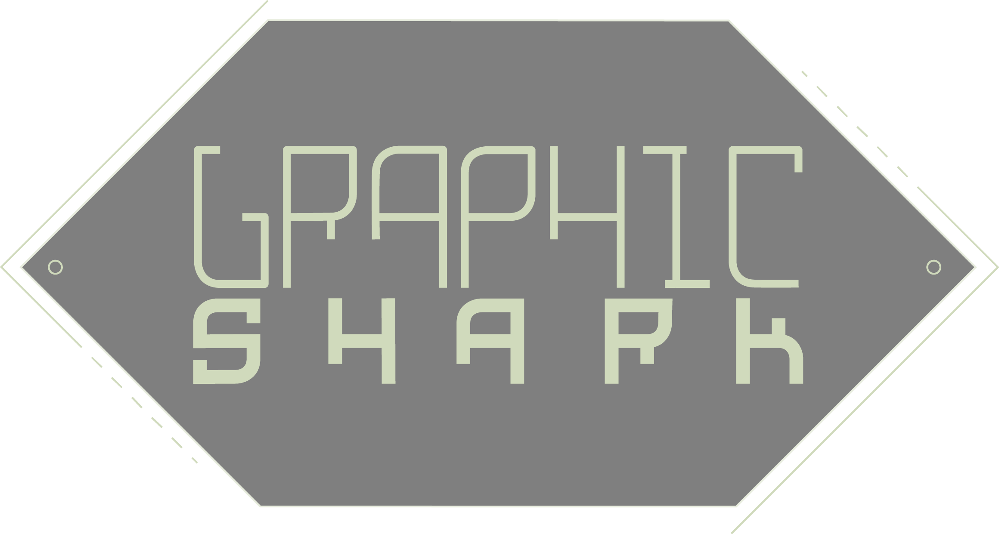

--- 
 layout: default
---

<section class="home">
    <section class="main-header">
        <div class="gradient-overlay"></div>
        <div class="center-bar">
           <div class="circle-container">
               {% include circle.html %}
           </div>
            <div class="bar-bg">
                <div class="bar-image"></div>
            </div>
            
            <div class="secondary-nav">
                <a href="#" class="nav-link">About Me</a>
                <a href="" class="nav-link">Portfolio</a>
                <a href="" class="nav-link">Blog</a>
            </div>
        </div>
    </section>
</section>